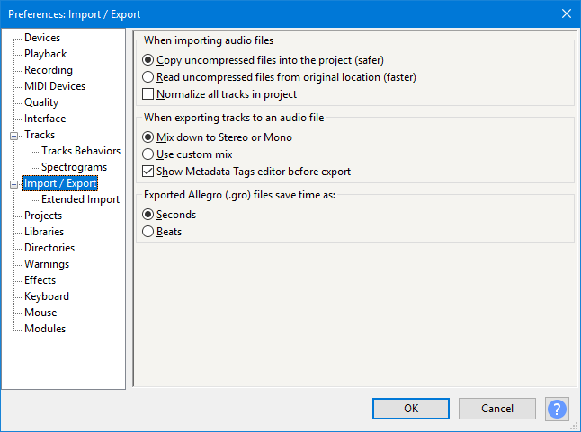

Import / Export Preferences
From Audacity Development Manual
- Accessed by: (on a Mac )
- 
Exported Label Style
- Standard: exports the start and end times of the label followed by the label name (this is the default setting).
- Extended (with frequency ranges): exports as above, adding any frequency selection that exists for the label.
Exported Allegro (.gro) file saves time as
When using you can export to .mid or .gro extension. The .gro extension signifies the Allegro file format which exports the Audacity Note Track as human-readable plain text. This preference controls whether the .gro file represents time and duration in seconds (default) or beats.
- Seconds: An example line in the .gro file would look like:
T1.3330 V0 K66 P66 U0.6660 L127
This instruction means "play key number 66 at time (T) 1.333 seconds for duration (U) 0.666 seconds." - Beats: An example line in the .gro file would look like:
TW0.5000 V0 K66 P66 Q1.0000 L127
This instruction means "play key number 66 at time (T) 0.5 whole notes (W) for duration (Q) 1 quarter notes."
| Audacity can import both .mid and .gro files for display, editing and playback. The .gro files will be imported correctly whether they contain data in seconds or beats. However many general purpose MIDI applications will not play .gro files. |
Music Imports
When importing an audio file into an empty project if Audacity detects that it is a music file then:
- Switch view to Beats and Measures and align with musical grid: Audacity will switch to a Beats and Measures Timeline (if that is not already set in the project) and the project tempo is set to be the detected tempo.
- Ask me each time: Audacity will ask you whether you want to switch or not (default)
- Do nothing: If the Timeline is set to Minutes and Seconds Audacity will not switch to a Beats and Measures Timeline
Audacity will not detect a music file that has:
|